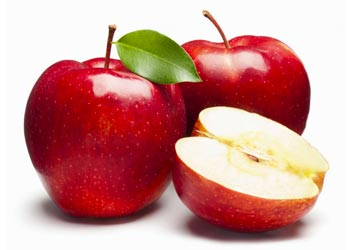
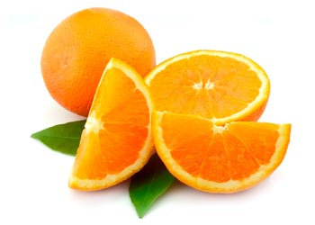

¿Por qué es tan bueno y necesario comer frutas?
La fruta es una parte importante de nuestra alimentación que no
puede faltar en tu dieta diaria porque
además de ser beneficiosa para tu organismo por la abundante
cantidad de nutrientes que lleva, es necesaria para garantizar
muchas de las funciones que tu cuerpo necesita realizar todos
los días.
La riqueza de este alimento se debe en su mayoría a su
composición, dado que está formada en su mayoría por agua, además
de contener una gran cantidad de vitaminas, una parte importante
de minerales, como calcio, potasio y fósforo, entre otros, así
como fibra alimentaria cuya proporción dependerá del tipo de fruta
de la que se trate.
Si te fijas en los nutrientes energéticos, las frutas contienen,
hidratos de carbono que suelen ser de absorción rápida, como los
azúcares simples, y además, pueden contener grasas o proteínas
como nutriente energético secundario.
10 beneficios de comer frutas
- Aportan gran cantidad de vitaminas
-
Aportan gran cantidad de minerales necesarios para tu organismo
- Son una gran fuente de antioxidantes
- Contienen mucha fibra
- Te ayudan a evitar la retención de líquidos
- Favorecen tu salud cardiovascular
- Te ayudan a mantener tu peso ideal
- Son muy refrescantes y además están deliciosas
- Resultan ideales para depurar nuestro organismo
- Ayuda a prevenir enfermedades
Cerezas
Las cerezas son ricas en nutrientes, especialmente en potasio,
fibra y vitamina C. Contienen antioxidantes, incluyendo
antocianinas y carotenoides, que reducen la inflamación y pueden
ayudar a prevenir varias enfermedades.
Otro beneficio impresionante para la salud de las cerezas es su
contenido de melatonina. La melatonina es una hormona que envía
señales a tu cerebro cuando es hora de dormir. Puede ayudar a
tratar el insomnio y otros trastornos del sueño.
Un estudio concluyó que el contenido de melatonina en el jugo de
cereza agria mejoró la duración y la calidad del sueño.
Las cerezas son ricas en nutrientes y antioxidantes. También
contienen melatonina, que puede mejorar la calidad de tu sueño.
Manzanas

Las manzanas están entre las frutas más populares y también son
increíblemente nutritivas. Contienen una gran cantidad de fibra,
vitamina C, potasio y vitamina K. También proporcionan algunas
vitaminas B.
Los estudios sugieren que los antioxidantes de las manzanas pueden
promover la salud del corazón y reducir el riesgo de diabetes tipo
2, cáncer y Alzheimer. La actividad antioxidante de las manzanas
también se ha relacionado con una mayor densidad ósea en estudios
realizados en animales y en laboratorio.
Las manzanas son muy nutritivas. Sus nutrientes, antioxidantes y
fibra pueden reducir el riesgo de enfermedades y mejorar la
digestión.
Frutillas
Las frutillas son altamente nutritivas. Se destacan por su
contenido de vitamina C, manganeso, folato y potasio.
En comparación con otras frutas, las frutillas tienen un índice
glucémico relativamente bajo. Comerlas no debería causar un
aumento brusco de azúcar en la sangre.
Al igual que otras bayas, las frutillas tienen una gran capacidad
antioxidante, lo que puede reducir el riesgo de desarrollar
enfermedades crónicas. Estudios en animales y en laboratorio han
demostrado que las frutillas también pueden ayudar a prevenir el
cáncer y la formación de tumores.
Las frutillas son ricas en varios nutrientes y antioxidantes.
Comerlas puede ayudar a controlar tus niveles de azúcar en la
sangre y reducir el riesgo de algunas enfermedades.
Naranjas

Las naranjas son una de las frutas más populares y nutritivas del
mundo. Una naranja mediana proporciona una cantidad significativa
de vitamina C y potasio. También son una buena fuente de vitaminas
B, como la tiamina y el folato.
Los compuestos vegetales de las naranjas son responsables de la
mayoría de sus beneficios para la salud. Entre ellos están los
flavonoides, los carotenoides y el ácido cítrico. Por ejemplo, el
ácido cítrico puede reducir el riesgo de cálculos renales.
Las naranjas contienen algunas vitaminas, minerales y
antioxidantes importantes. Estos pueden reducir el riesgo de
varias afecciones como los cálculos renales y la anemia.
Limones
Los limones son una fruta cítrica muy saludable conocida por su
alto contenido de vitamina C. Pueden ser particularmente útiles
para promover la salud del corazón debido a su potencial para
reducir los lípidos en la sangre y la presión arterial.
De acuerdo con los hallazgos de estudios en animales, los
investigadores también han propuesto que los compuestos vegetales
en los limones pueden ayudar a prevenir el aumento de peso.
Otros estudios muestran que el ácido cítrico en el jugo de limón
tiene la capacidad de tratar los cálculos renales
Los limones son ricos en vitamina C y otros compuestos de plantas
que pueden promover la salud del corazón, impulsar la pérdida de
peso y ayudar a prevenir los cálculos renales.
Bananas
Las bananas son ricas en vitaminas y minerales y tienen bastantes
beneficios para la salud. Son bien conocidas por su alto contenido
de potasio.
Una propiedad exclusiva de las bananas es su composición de
carbohidratos. Los carbohidratos de las bananas sin madurar
constan en gran parte de almidón resistente, que puede mejorar el
control del azúcar en la sangre y hacerte sentir lleno.
Los estudios han demostrado que el alto contenido de carbohidratos
y minerales de las bananas las convierten en una gran fuente de
energía antes de hacer ejercicio.
La banana proporciona nutrientes y compuestos, incluyendo almidón
resistente y pectina. Puede tener beneficios para el ejercicio, el
control del azúcar en la sangre y la salud digestiva.